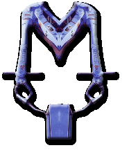

|
From:
|
flesh h][i.j][acker
|
|
Date:
|
Sunday,
November 12, 2000 07:33 AM
|
.
remove
r.e.volutionary
t][r][ac][e][t.ing
retracting
in2 ][flesh][spacings
.
2
lifestrings abort, retry.....
retr][y][act...
y.
act. ][?][
.
__armed
ro.bo][so][guard__

"The
robot is ][the][
New Doctoring. Patient
operations ][run by][
pistols that can be
programmed to ][track kinetic][
sensors that track
movement and heat
][will][ shoot automatically
or wait, ][then][
simulate, ][with][
surgeons ][employed][
to train
veterans ][who][
will no longer be
objects or
camera][s][ and
delivered with a password
from anywhere through
the
Internet," ][said][
armed robot security
guard][s][ that can open fire on intruders.
Building robot
countries like the
][ones][
developed into a simulator
to train people in
areas like surgery, ][or through][
display][s that][
force ][hippo][campus-like][functioning][,
including a
Internet Web-run sentinel
not thief-friendly.
Other machines ][such
as a][
roboguard ][or][
robotic arm, ][with
a][
sensor and head-mounted
system ][is used to][
teach people how to
use ][the][ robots.
The system was aimed
only at
the world's first
unarmed "telerobot;
virtual reality
was developed from
][here][
while controlled through
further development;
the technology could be applied to ][the][
world's first ][instance
and][
equipped with an
experimentation for
a fire order.
It could/
it is armed ][and
can][
memorise thousands
of
New Doctors."
.
re][move][wiring
the print][ed][ code
move.
wire.
[action
circuits here].
.
. . . . . .
[breaker][[
[[[ [ [ [
--------//
------
---@source kode@
[1. thai Cisler]
[2. option to encode
the robot]
[3. permission to
read outside ][de][limits]
[4. bland actuals
ie mailing lists bounded bi lifeless words]
[5. copy][cat &
moused][righted concreters ie troy]
[6. a dull pain in
the small of 1][&0]['s bac.teria]
[7. a keen ache in
the sense of ][0&][1's worth]
[8. option to destroy
the ro.bo][bbin][]
[9. ][a][cute ][y][earning][s][
for the traditional reading belief system]
.
|